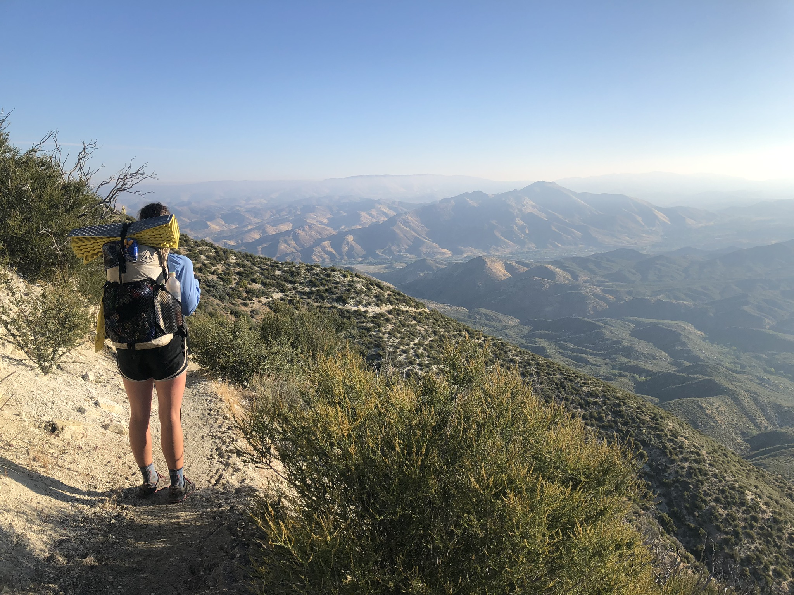
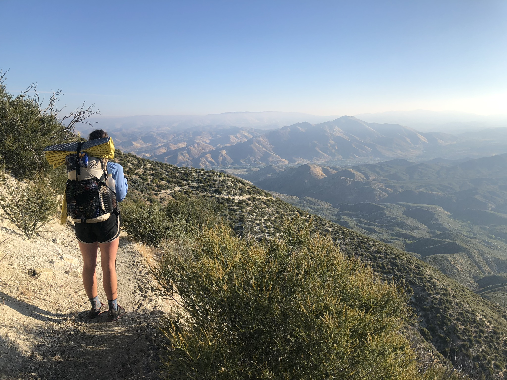

10 Jumps Out of a Perfectly Good Airplane
"Perfectly good" is a relative term when referring to skydiving airplanes. They are always a little iffy, but it's fine because everyone on board has a parachute!
9 Times Crossing the Atlantic
Between visits to France and living in Germany, I have travelled across (over and back) the Atlantic Ocean 9 times! This has been made easier (and more affordable) with my dad and brother both being pilots.
8 Everyday foods I've made from scratch
Cooking is one of my favorite ways to wind down at the end of a long day or relax on the weekend. There's something therapeutic in taking so many different elements and combining them in new and different ways creating an entirely new and (usually) delicious concoction! Recently, one of my obsessions has been recreating everyday items that we buy at the store. From making my own pasta, to brewing my own beer, here are 8 things I've recreated:
- Pasta- if you haven't tried making your own pasta, I HIGHLY recommend it. Kneading the dough is a great way to work through things that create stress in our lives and it has such a delicious texture, making it a wonderful addition to Chicken Noodle Soup!
- Mayonnaise - creating an emulsion with eggs ane oil is tough to get just right, but the creaminess can't be beat!
- Cultured Butter - this one is quite a science experiment. By taking cream and a small amount of buttermilk, then letting it sit at room temperature for a whole week before churning it in a food processor, you get delicious buttery butter.
- Pickles (all kinds!) - Working in a Korean restaurant for a year allowed me to make so many different types of pickles and you can't beat the crunchiness of homemade pickles.
- Almond Milk - I can say I did it. But I still buy the stuff at the store. It was too much work with not enough payoff in my opinion.
- Hummus - I keep homemade hummus in my fridge almost all of the time. It is so easy to make and cheaper than store-bought!
- Mustard - Similar to pickles, making your own mustard can be delicious and wonderful to personalize it to your specific taste.
- Beer - Another thing that I don't do often, but it's a fun experiment in my parent's basement!
7 Places I've Hiked
Possibly my favorite hobby because it combines travelling and nature, hiking created happiness. Waking up in the morning surrounded by nature and having nothing you have to do that day but walk is truly amazing. Last summer (2019) I spent 2 months hiking 566 miles of the Pacific Crest Trail, which goes from the border of Mexico to Canada through California, Oregon, and Washington. I had to leave before finishing the full 2,653 miles to the Canada due to an injury, but I have plans to go back, hopefully with a little less snow in the Sierra Nevada mountain range!
- Southern California
- Texas
- Utah
- Colorado
- Arkansas
- Germany
- Iceland
 

6 Miles Run Continuously
While this may not be a list, it's still an accomplishment I'm proud of! I am NOT a runner. I danced ballet for 15 years, so my knees and ankles have trouble with the pounding created by running. The amount of hiking I do probably doesn't help either! However, running shorter distances is something I really enjoy. Pushing my body to see How far it can go and what it can do is always an enticing challenge for me.
5 National Parks I've Visited
- Big Bend, Texas
- Joshua Tree, California
- Zion, Utah
- Rocky Mountain National Park
- Guadalupe Mountains, Texas - This was actually my first backpacking trip and it was AWFUL. My boots were new so they destroyed my feet on the rocky terrain. My backpack was way too heavy, mostly with the necessary water for the West Texas desert. Somehow, I still came out of that experience with a sense of accomplishment and excitemnet that I wanted to find again!


4 Cities I've Lived
- Austin, Texas - I moved to Austin right after college. I ended up there because I followed a boy, but ended up falling in love with the city. It's a little too warm in the summertime for my liking, but the live music and atmosphere are incredible.
- Kansas City - I grew up in Leawood, Kansas and have come full circle.
- Paris, France - I'm not sure I TECHNICALLY lived here, but I needed it to have a list of 4. I lived with a French family near Paris for a summer during college while I was learning French. They had a daughter my age and when going out with friends you had to either take the last bus home at midnight (a little early) or wait for the first bus at 5am. Sitting on the steps of the palace where King Louis XIV (who built Versaille) was born, watching the sun come up over Paris was so amazing.
- Nuremberg, Germany - I lived in Germany from 2015-2019. I spoke no german when I got there, had actually never been to the country! My family joked around about studying French for so long and then not moving there instead.
3 Liters of Beer at Oktoberfest
This is another one that's not a list, but I feel it's important life advice. The limit is 3. Don't drink more than that. At least not before going on the roller coasters. A whole liter of beer also only costs € 11!
2 Articles of Clothing Made With my Own Hands
I find making things to be very rewarding, however I've only made a couple pieces of clothing. My mom sewed many things for me when I was little, and is still an avid knitter. One of my wintertime hobbies is knitting with my mom while we watch awful Hallmark Christmas Movies.
- Pajama Pants - These were Hello Kitty pajama pants that I made in home economics in middle school
- Scarf- They make easy gifts!